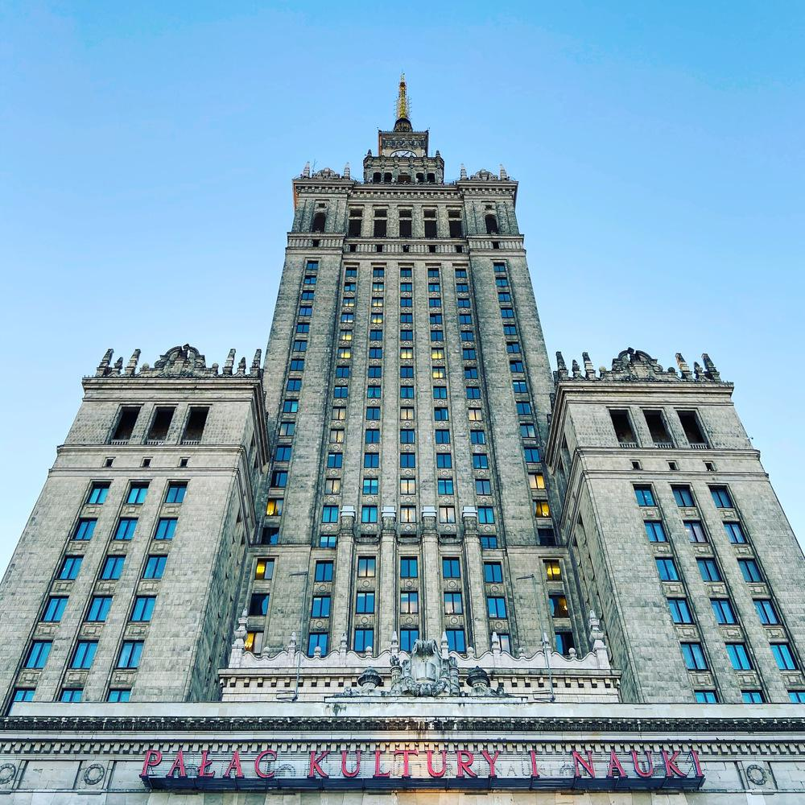

Palace of Culture and Science (Polish: Pałac Kultury i Nauki), is a notable high-rise building in central Warsaw, Poland. With a total height of 237 metres (778 ft) it is the tallest building in Poland, the 5th-tallest building in the European Union (including spire) and one of the tallest on the European continent. Constructed in 1955, it houses various public and cultural institutions such as cinemas, theatres, libraries, sports clubs, university faculties and authorities of the Polish Academy of Sciences.